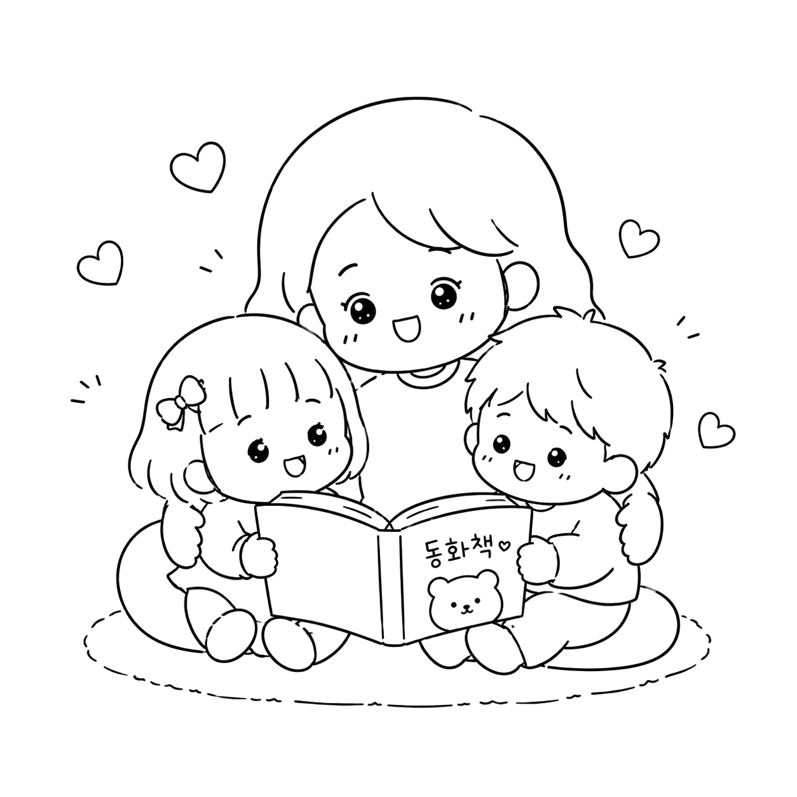

기록만 쌓이는 게 아니라,
매주 답이 돌아와요
혼자 하는 엄마표영어가 무너지는 이유는 아무도 봐주지 않아서예요. 진행표를 보고 소시네가 직접 피드백을 드려요.
이번 주는 아이가 좋아하는 시리즈를 찾은 게 제일 커요.
다음 주엔 같은 작가 책으로 한 권 더 가볼게요 💛
이런 피드백을 매주 받아요 (예시 문구)
학부모가 쓰는 진행표 화면 (예시 데이터)
6~11세 아이의 엄마표영어를 매주 소시네가 같이 봐드려요.
수업이 아니라, 집에서 하는 영어를 함께 설계하고 점검해요.

오늘 10분만 해볼까?책도 사고 영상도 틀어주는데 뭔가 빠진 느낌. 빠진 건 교재가 아니라 방향과 꾸준함이에요.
차이는 딱 하나, 함께 봐주는 사람이 있느냐예요.
처음에 시작 설문으로 아이의 현재 위치를 확인하고 나면, 매주 같은 흐름이 반복돼요.
혼자 하는 엄마표영어가 무너지는 이유는 아무도 봐주지 않아서예요. 진행표를 보고 소시네가 직접 피드백을 드려요.
이번 주는 아이가 좋아하는 시리즈를 찾은 게 제일 커요.
다음 주엔 같은 작가 책으로 한 권 더 가볼게요 💛
이런 피드백을 매주 받아요 (예시 문구)
학부모가 쓰는 진행표 화면 (예시 데이터)
거창한 계획은 오래 못 가요. 10분씩 세 가지로 가볍게 시작하고, 아이가 익숙해지면 조금씩 늘려가요.
영상아이가 좋아하는 영어 영상으로 재미있게 소리에 노출돼요.
영어책아이 레벨에 맞게 골라드린 그림책·리더스를 함께 읽어요.
집중듣기소리를 따라 글자를 짚으며 들어요. 읽기 체력이 여기서 자라요.
오늘 한 만큼 진행표에 체크하면 끝이에요.
받는 것, 함께 하는 것, 아이가 노는 것으로 나눠봤어요.
아이 단계에 맞춰 골라서 보내드려요
소시네가 직접 봐드려요
공부 느낌 없이 하는 놀이 시간

읽은 권수와 들은 시간이 자동으로 정리돼요. 감이 아니라 기록으로 아이의 성장이 보여요. (예시 데이터)
단계마다 필요한 자료와 활동이 정해져 있고, 우리 아이 단계에 맞는 것만 골라드려요. 단계는 정해져 있지만 속도는 우리 아이 것이에요.
영어를 '공부'가 아니라 '소리'로 먼저 만나요. 거부감부터 없애는 게 먼저예요.
소리와 글자를 연결하고, 자주 나오는 단어를 눈에 익혀서 읽기의 기초를 다져요.
"엄마, 나 이거 읽었어!" 처음으로 혼자 읽는 성취감을 맛보는 단계예요.
집중듣기와 낭독을 함께 쌓으며 읽기 체력을 키우고, 짧은 글쓰기를 시작해요.
그림 없이도 이야기에 빠져드는 진짜 리더가 돼요. 여기부터는 아이가 스스로 가요.